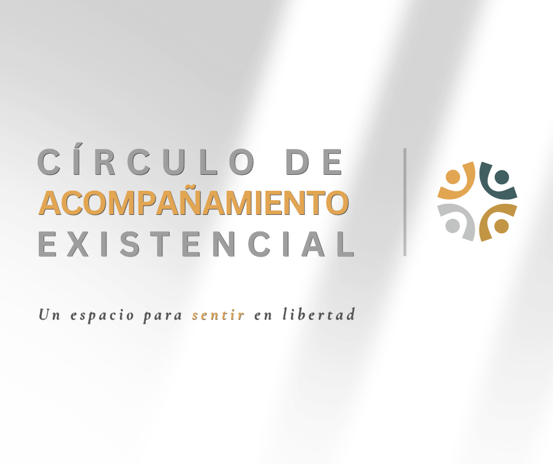
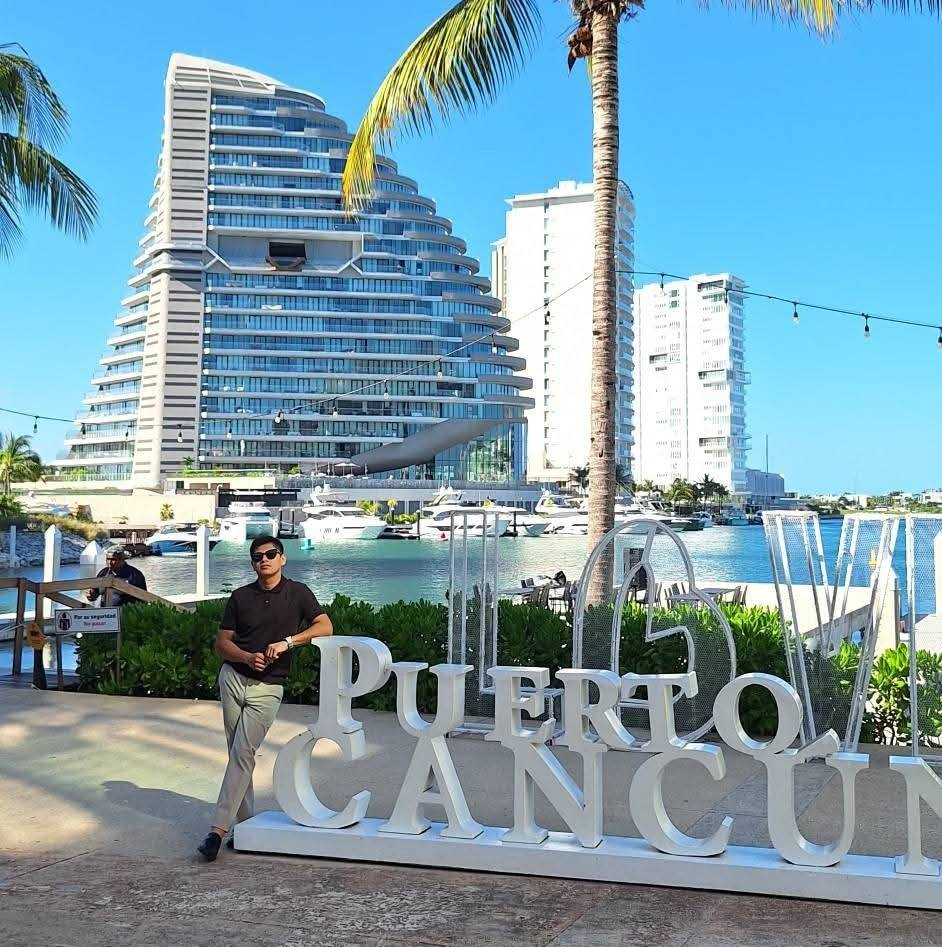

"Un refugio para el dolor; un espacio para la existencia."
SOLICITAR ACOMPAÑAMIENTO"Un refugio para el dolor; un espacio para la existencia."
SOLICITAR ACOMPAÑAMIENTO
Fundador de Tierra, Semilla y Fruto
Psicólogo y Tanatólogo dedicado a la arqueología del gesto y la radiografía de lo invisible. He dedicado mi trayectoria a transformar el dolor en terreno fértil para la vida, integrando la elegancia con la calidez del acompañamiento fenomenológico.


Acompaño procesos de duelo y crisis de sentido desde una perspectiva existencial. No se trata solo de superar el dolor, sino de aprender a habitarlo para encontrar la semilla de lo que está por nacer.